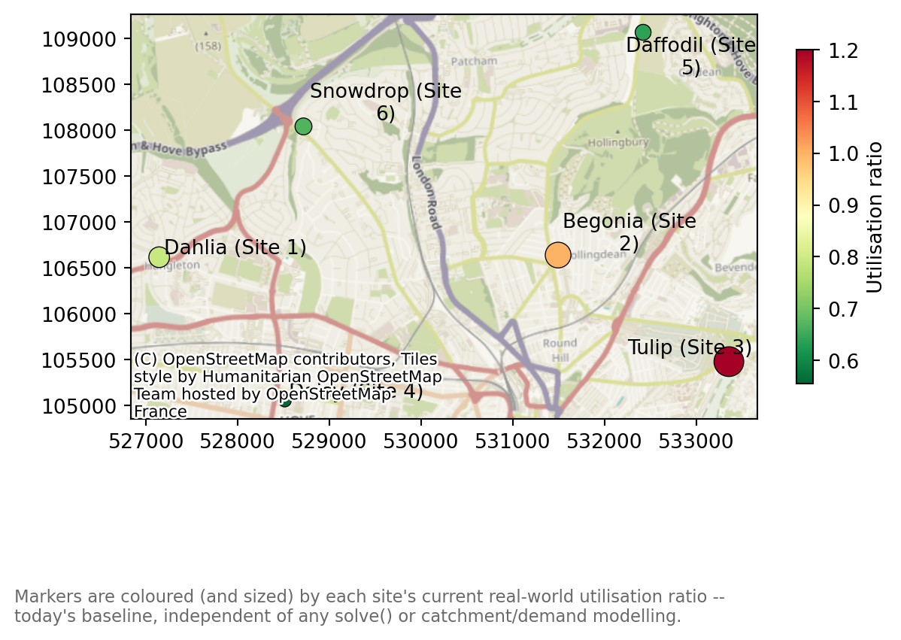
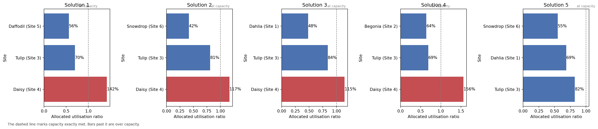
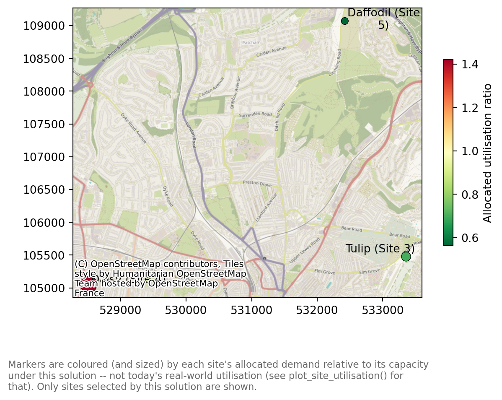

import geopandas as gpd
from lokigi.site import SiteProblem
sites_gdf = gpd.read_file("../../../sample_data/brighton_sites_named.geojson")
# Illustrative weekly appointment capacity and current caseload -- made up for
# demonstration, since the sample dataset has no real activity data.
sites_gdf["weekly_capacity"] = [120, 80, 200, 90, 110, 150]
sites_gdf["weekly_caseload"] = [95, 80, 240, 50, 70, 100]
problem = SiteProblem()
problem.add_sites(
sites_gdf,
candidate_id_col="site",
capacity_col="weekly_capacity",
current_load_col="weekly_caseload",
)Site Utilisation
Every method in the 2SFCA example and site_allocation_summary() (see the comparing N sites example) answers a question about reachable or allocated supply – how much supply is available given competition from other regions’ demand, or how much demand a site would pick up under a solved solution. Both need a travel matrix, and the latter needs a solved solution.
This example answers a different, simpler question: is this site already full today? site_utilisation_summary() and plot_site_utilisation() report a site’s real-world current load against its capacity, using only candidate_sites – no demand data, no travel matrix, and no solve() required. It’s a baseline diagnostic, not a model output.
Setting up the problem
Same six Brighton sites as the 2SFCA example. The sample dataset has no real staffing or activity data, so as with that example’s illustrative gp_fte column, we add two made-up columns here for demonstration: weekly_capacity (appointment slots per week) and weekly_caseload (slots actually booked). We’ll imagine this is an average over the last 24 weeks.
add_sites(current_load_col=..., capacity_col=...) registers both – current_load_col always needs capacity_col alongside it, since a raw count on its own can’t be turned into a ratio.
Raw counts: current load and capacity
site_utilisation_summary() derives utilisation_ratio (current_load / capacity) and headroom (capacity - current_load) for every site. Sorting by utilisation_ratio surfaces the fullest sites first.
summary = problem.site_utilisation_summary()
summary.sort_values("utilisation_ratio", ascending=False)| capacity | current_load | utilisation_ratio | headroom | |
|---|---|---|---|---|
| site | ||||
| Tulip (Site 3) | 200 | 240 | 1.200000 | -40 |
| Begonia (Site 2) | 80 | 80 | 1.000000 | 0 |
| Dahlia (Site 1) | 120 | 95 | 0.791667 | 25 |
| Snowdrop (Site 6) | 150 | 100 | 0.666667 | 50 |
| Daffodil (Site 5) | 110 | 70 | 0.636364 | 40 |
| Daisy (Site 4) | 90 | 50 | 0.555556 | 40 |
Tulip is booked at 120% of its weekly capacity (headroom of -40 slots) and Begonia is running exactly full (headroom of 0) – both would be strong candidates for extra provision before considering any new site. utilisation_ratio/headroom are left as-is above 1.0 rather than clipped, since a genuinely over-capacity site is itself the finding.
A site with no registered load or capacity at all (typically: a proposed site that isn’t built yet) would appear as an explicit NaN row here rather than 0.0 – a real 0.0 would misleadingly read as “measured, and currently idle”.
An alternative input shape: a precomputed ratio
Not every analyst will have raw current-load/capacity counts to hand – sometimes all that’s available is a utilisation percentage someone has already worked out. add_sites(utilisation_col=...) supports that shape directly, and is mutually exclusive with current_load_col.
# Same six sites, registered instead with a single precomputed ratio and no raw
# counts -- e.g. a percentage an analyst already had to hand.
sites_gdf["utilisation_pct"] = (
sites_gdf["weekly_caseload"] / sites_gdf["weekly_capacity"]
)
ratio_only_problem = SiteProblem()
ratio_only_problem.add_sites(
sites_gdf,
candidate_id_col="site",
utilisation_col="utilisation_pct",
)
ratio_only_problem.site_utilisation_summary().sort_values(
"utilisation_ratio", ascending=False
)| utilisation_ratio | |
|---|---|
| site | |
| Tulip (Site 3) | 1.200000 |
| Begonia (Site 2) | 1.000000 |
| Dahlia (Site 1) | 0.791667 |
| Snowdrop (Site 6) | 0.666667 |
| Daffodil (Site 5) | 0.636364 |
| Daisy (Site 4) | 0.555556 |
Without a registered capacity_col, the result is narrower: no capacity, no current_load, and no headroom – there’s nothing to derive them from. Pairing utilisation_col with capacity_col (rather than current_load_col) still derives headroom (as capacity * (1 - utilisation_ratio)), just without a current_load column, since no raw caseload was registered.
ratio_and_capacity_problem = SiteProblem()
ratio_and_capacity_problem.add_sites(
sites_gdf,
candidate_id_col="site",
capacity_col="weekly_capacity",
utilisation_col="utilisation_pct",
)
ratio_and_capacity_problem.site_utilisation_summary().sort_values(
"utilisation_ratio", ascending=False
)| capacity | utilisation_ratio | headroom | |
|---|---|---|---|
| site | |||
| Tulip (Site 3) | 200 | 1.200000 | -40.0 |
| Begonia (Site 2) | 80 | 1.000000 | 0.0 |
| Dahlia (Site 1) | 120 | 0.791667 | 25.0 |
| Snowdrop (Site 6) | 150 | 0.666667 | 50.0 |
| Daffodil (Site 5) | 110 | 0.636364 | 40.0 |
| Daisy (Site 4) | 90 | 0.555556 | 40.0 |
Mapping utilisation
plot_site_utilisation() colours and sizes each site marker by utilisation_ratio – deliberately the reverse of plot_accessibility()’s site markers in the 2SFCA example. There, a high ratio is good (green, drawn large); here, a high ratio is bad (red, and also drawn large, so a hotspot is easy to spot on the map rather than shrinking out of view).
problem.plot_site_utilisation(add_basemap=True, show_labels=True);
Tulip and Begonia stand out immediately as the largest, reddest markers – exactly the two sites already flagged above.
interactive=True returns the same map as a Folium map, with a tooltip on every site.
problem.plot_site_utilisation(add_basemap=True, show_labels=True, interactive=True)Make this Notebook Trusted to load map: File -> Trust Notebook
Does the solution fit? Allocated demand vs capacity
Everything above treats capacity as a today’s-baseline question, entirely independent of any solve. site_capacity_summary() (on SiteSolutionSet, not SiteProblem) asks a solve-derived question instead: for a chosen solution, does each selected site have room for the demand allocated to it? It builds directly on site_allocation_summary() (see the comparing N sites example) plus the same weekly_capacity/weekly_caseload registered above, so we need demand data and a travel matrix – neither registered yet – and a solved solution to allocate regions with.
Warning
lokigi does not yet support capacitated facility location – there is no way to tell solve() “don’t pick a combination that overloads a site’s capacity”. The solve(p=3, ...) call below picks its three sites purely on the travel-time objective (and threshold_for_coverage); capacity plays no part in which sites get selected.
site_capacity_summary() is a diagnostic that runs after the fact: it takes whatever solution solve() already settled on and checks whether the resulting allocation happens to fit. A solution can score well on travel time and still turn out to overload a site once you check its capacity – as Daisy (Site 4) does below. If that happens, there is currently no automatic way to ask solve() for the next-best solution that avoids it; you would have to inspect the runner-up rows in solutions.show_solutions() and run site_capacity_summary() against each in turn.
problem.add_demand(
"../../../sample_data/brighton_demand.csv",
demand_col="demand",
location_id_col="LSOA"
)
problem.add_travel_matrix(
travel_matrix_df="../../../sample_data/brighton_travel_matrix_driving_named.csv",
source_col="LSOA",
from_unit="seconds",
to_unit="minutes"
)
solutions = problem.solve(p=3, threshold_for_coverage=8)allocated_demand is site_allocation_summary()’s own figure – the population closest to each selected site under this solution. allocated_utilisation_ratio (allocated_demand * demand_to_capacity_rate / capacity) assumes that demand replaces today’s caseload entirely, i.e. this is what the network would look like if it were rebuilt from scratch around this solution. current_load/headroom/incremental_headroom_ratio are also carried over from site_utilisation_summary()’s own registration, since we already registered current_load_col above – incremental_headroom_ratio instead assumes the allocated demand lands on top of today’s caseload (e.g. a new service line), which is a different and not necessarily compatible story. Neither assumption is universally right; which one applies depends on what the solution actually represents.
capacity_summary = solutions.site_capacity_summary()
capacity_summary.sort_values("allocated_utilisation_ratio", ascending=False)| n_regions | allocated_demand | allocated_load | capacity | allocated_utilisation_ratio | current_load | headroom | incremental_headroom_ratio | residual_headroom | |
|---|---|---|---|---|---|---|---|---|---|
| site | |||||||||
| Daisy (Site 4) | 66 | 127759 | 127759.0 | 90 | 1419.544444 | 50 | 40 | 3193.975 | -127719.0 |
| Tulip (Site 3) | 59 | 139817 | 139817.0 | 200 | 699.085000 | 240 | -40 | -3495.425 | -139857.0 |
| Daffodil (Site 5) | 40 | 61957 | 61957.0 | 110 | 563.245455 | 70 | 40 | 1548.925 | -61917.0 |
allocated_demand above is in population units (people), while weekly_capacity is in appointment slots per week – directly dividing one by the other, as allocated_utilisation_ratio does by default, silently assumes 1 appointment per person, which is not a real conversion. demand_to_capacity_rate converts between the two explicitly: if, say, 0.1% of the population in a site’s catchment books an appointment there in a given week, that’s demand_to_capacity_rate=0.001.
capacity_summary_adjusted = solutions.site_capacity_summary(demand_to_capacity_rate=0.001)
capacity_summary_adjusted.sort_values("allocated_utilisation_ratio", ascending=False)| n_regions | allocated_demand | allocated_load | capacity | allocated_utilisation_ratio | current_load | headroom | incremental_headroom_ratio | residual_headroom | |
|---|---|---|---|---|---|---|---|---|---|
| site | |||||||||
| Daisy (Site 4) | 66 | 127759 | 127.759 | 90 | 1.419544 | 50 | 40 | 3.193975 | -87.759 |
| Tulip (Site 3) | 59 | 139817 | 139.817 | 200 | 0.699085 | 240 | -40 | -3.495425 | -179.817 |
| Daffodil (Site 5) | 40 | 61957 | 61.957 | 110 | 0.563245 | 70 | 40 | 1.548925 | -21.957 |
At this rate, Daisy is the one over capacity (allocated_utilisation_ratio 1.42) if this three-site solution replaced today’s network entirely – despite being the least full site in today’s baseline utilisation table above. Tulip, today’s most over-capacity site, actually has room to spare under this solution (0.70): a three-site network draws a different, larger catchment around it than its current caseload reflects. incremental_headroom_ratio tells a different story again – it’s negative for Tulip (-3.50), since its headroom is already negative today (it’s over capacity before any of this solution’s demand is added), so no allocation is absorbable there under that assumption at all.
Tip
demand_to_capacity_rate isn’t registered anywhere on the problem or the solution – there’s no add_sites(demand_to_capacity_rate=...) equivalent. It’s a plain argument to whichever method you call, every time you call it, so it’s easy to compute a corrected table once and then forget to pass the same rate into a plot – each of site_capacity_summary(), plot_site_capacity_summary(), and plot_allocated_utilisation() defaults independently back to 1.0 if you don’t.
That default silently assumes 1 appointment per person, which is exactly the wrong conversion here – not an error, just a number nobody meant to compute. The tell is a chart where every bar dwarfs the “at capacity” reference line by two or three orders of magnitude (a bar at “141954%”, say, rather than a plausible “142%”) – if you ever see that, the fix is almost always a missing or mismatched demand_to_capacity_rate, not a bug in the data.
The safest way to avoid this: compute the frame once with the rate applied, and pass that into every plot via capacity_df=, as the cells below do, rather than repeating demand_to_capacity_rate= at each call site:
capacity_summary_adjusted = solutions.site_capacity_summary(demand_to_capacity_rate=0.001)
solutions.plot_site_capacity_summary(capacity_df=capacity_summary_adjusted)
solutions.plot_allocated_utilisation(capacity_df=capacity_summary_adjusted)Plotting the fit
plot_site_capacity_summary() bars each site’s ratio against a dashed “at capacity” reference line, colouring over-capacity bars distinctly from under-capacity ones – semantically, not per-site, since the finding here is whether a site fits, not which site is which. Passing capacity_df=capacity_summary_adjusted (computed above) keeps the bars on that same, meaningful scale – calling this with no capacity_df or demand_to_capacity_rate would recompute from scratch at the naive (and, as seen above, useless) default rate of 1.0.
solutions.plot_site_capacity_summary(capacity_df=capacity_summary_adjusted)Let’s repeat this for the top 5 solutions.
import matplotlib.pyplot as plt
fig, axes = plt.subplots(1, 5, figsize=(20, 4), constrained_layout=True)
for i, ax in enumerate(axes, start=1):
solutions.plot_site_capacity_summary(
interactive=False,
demand_to_capacity_rate=0.001,
solution_rank=i,
ax=ax,
)
ax.set_title(f"Solution {i}")
plt.show()
Mapping allocated utilisation
plot_allocated_utilisation() puts site_capacity_summary()’s allocated_utilisation_ratio on a map (again passing capacity_df=capacity_summary_adjusted), colouring and sizing markers the same way plot_site_utilisation() does above – red and large for a stretched site. Unlike that map, only the sites selected by this solution are drawn: an unselected candidate would otherwise have to be shown grey, but grey already means “no capacity registered” here, and conflating “not chosen” with “chosen but not measured” would be actively misleading.
solutions.plot_allocated_utilisation(
capacity_df=capacity_summary_adjusted, add_basemap=True, show_labels=True
);
solutions.plot_allocated_utilisation(
capacity_df=capacity_summary_adjusted, add_basemap=True, show_labels=True, interactive=True
)Make this Notebook Trusted to load map: File -> Trust Notebook
Elsewhere in lokigi
- The 2SFCA example answers a related but different question – how much supply is reachable given competition from other regions’ demand. That’s catchment-derived and needs a travel matrix; this notebook’s utilisation figures are today’s real-world baseline, registered directly on
candidate_sites. site_allocation_summary()(see the comparing N sites example) answers a third, solve-derived question – how much demand would this site pick up under a chosen solution.site_capacity_summary(), demonstrated above, is the bridge between that and this notebook’s baseline: does the allocated demand actually fit within the registered capacity?- The evaluating an existing site combination example evaluates the current network’s travel performance (coverage, average travel time); this one evaluates each site’s current load. The two are complementary baselines for the same “before any changes” story.
Warning
Worth repeating: none of this constrains solve(). lokigi has no capacitated search strategy yet – site_capacity_summary() only checks a chosen solution’s allocation against capacity after solve() has already picked it on travel-time grounds alone. It cannot rule out an over-capacity combination before it’s selected, or ask solve() to search for one that fits better.